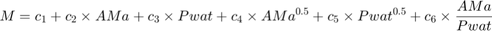
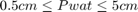
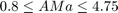
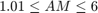
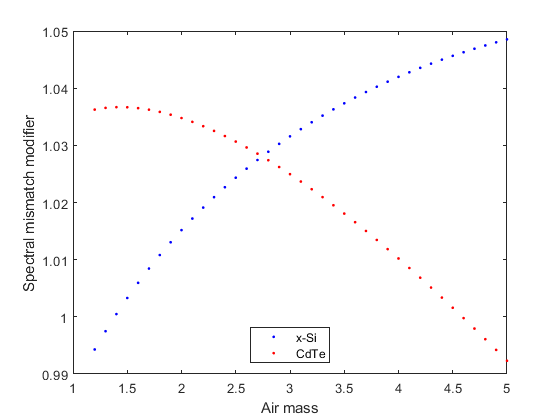

pvl_FSspeccorr
Spectral mismatch modifier based on precipitable water and absolute (pressure corrected) airmass.
Function pvl_FSspeccorr was developed by Mitchell Lee and Alex Panchula, at First Solar, 2015.
Contents
Syntax
- M = pvl_FSspeccorr(Pwat, AMa, pvModType)
- M = pvl_FSspeccorr(Pwat, AMa, custCoeff)
Description
Estimates a spectral mismatch modifier M representing the effect on module short circuit current of variation in the spectral irradiance. M is estimated from absolute (pressure currected) air mass, AMa, and precipitable water, Pwat, using the following function:

Default coefficients are determined for several cell types with known quantum efficiency curves, by using the Simple Model of the Atmospheric Radiative Transfer of Sunshine (SMARTS) [1]. Using SMARTS, spectrums are simulated with all combinations of AMa and Pwat where:
- 
- , i.e., pressure of 800 mbar and 
- Spectral range is limited to that of CMP11 (280 nm to 2800 nm)
- Spectrum simulated on a plane normal to the sun
- All other parameters fixed at G173 standard
From these simulated spectra, M is calculated using the known quantum efficiency curves. Multiple linear regression is then applied to fit Eq. 1 to determine the coefficients for each module.
Inputs
- Pwat - atmospheric precipitable water (cm). Can be entered as a vector.
- AMa - absolute (pressure corrected) airmass, as a vector of the same length as Pwat
- pvModType - a string specifying a cell type. Can be lower or upper case letters. Admits values of 'cdte', 'monosi'='xsi', 'multisi'='polysi'. If provided, this input selects coefficients for the following default modules: 'cdte' - coefficients for First Solar Series 4-2 CdTe modules. 'monosi','xsi' - coefficients for First Solar TetraSun modules. 'multisi','polysi' - coefficients for multi-crystalline silicon modules. The module used to calculate the spectral correction coefficients corresponds to the Mult-crystalline silicon Manufacturer 2 Model C from [2].
- custCoeff - allows for entry of user defined spectral correction coefficients. Coefficients must be entered as a numeric row or column vector of length 6. Derivation of coefficients requires use of SMARTS and PV module quantum efficiency curve. Useful for modeling PV module types which are not included as defaults, or to fine tune the spectral correction to a particular mono-Si, multi-Si, or CdTe PV module. Note that the parameters for modules with very similar QE should be similar, in most cases limiting the need for module specific coefficients.
Output
- M - spectral mismatch factor (unitless) which is can be multiplied with broadband irradiance reaching a module's cells to estimate effective irradiance, i.e., the irradiance that is converted to electrical current.
Example
Pwat = pvl_calcPwat(25,70) % compute precipitable water at STC temperature of 25C and 70% RH AMa = 1.2:0.1:5; % a range for absolute air mass MxSi = pvl_FSspeccorr(Pwat, AMa, 'xSi'); MCdTe = pvl_FSspeccorr(Pwat, AMa, 'CdTe'); figure plot(AMa,MxSi,'b.') hold all plot(AMa,MCdTe,'r.') xlabel('Air mass') ylabel('Spectral mismatch modifier') legend('x-Si','CdTe','Location','South')
Pwat =
3.5090
 References
- [1] Gueymard, Christian. SMARTS2: a simple model of the atmospheric radiative transfer of sunshine: algorithms and performance assessment. Cocoa, FL: Florida Solar Energy Center, 1995.
- [2] Marion, William F., et al. User's Manual for Data for Validating Models for PV Module Performance. National Renewable Energy Laboratory, 2014. http://www.nrel.gov/docs/fy14osti/61610.pdf